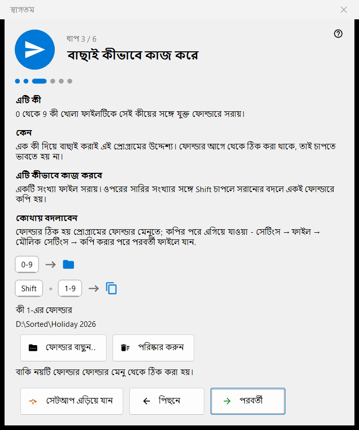
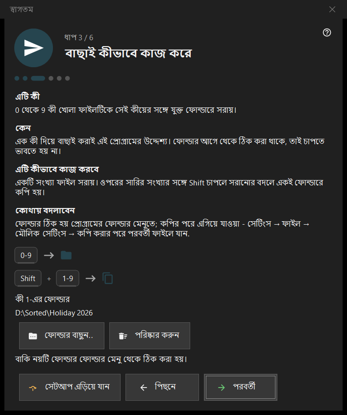

স্বাগতম
স্বাগতম
এটি কীসের জন্য
স্বাগত ধাপগুলো কয়েক মিনিটে মৌলিক বিষয়গুলো ঠিক করে: ভাষা, চেহারা, কী 1-এর ফোল্ডার, মোছা এবং ফাইল সংযোগ। এগুলো প্রথমবার চালুর সময়, খালি ভিউয়ার স্ক্রিনের প্রাথমিক সেটআপ বোতাম থেকে এবং সেটিংসের সাধারণ পৃষ্ঠার স্বাগত ধাপগুলো আবার দেখান বিকল্প থেকে খোলে। এগুলো শুধু 64-বিট সংস্করণে আছে।


এই ক্রমে
- ভাষা বেছে নিন।
- পটভূমির স্কিম ও হুইলের কাজ বেছে নিন।
- কী 1-এর ফোল্ডার বেছে নিন।
- মোছা কীভাবে কাজ করে তা পড়ুন।
- ফাইল সংযোগ ঠিক করুন।
- সারসংক্ষেপ দেখে শেষ বোতাম চাপুন। পরবর্তী বোতাম এগিয়ে নেয়, পিছনে বোতাম ফিরিয়ে আনে, সেটআপ এড়িয়ে যান বোতাম শেষ ধাপে নিয়ে যায়।
উপাদানসমূহ
ইন্টারফেসের ভাষা
উইন্ডোর ভাষা প্রিভিউ হিসেবে সঙ্গে সঙ্গে বদলে যায়; প্রোগ্রাম সেটি গ্রহণ করে শুধু পরবর্তী চাপলে। পরবর্তী না চেপে উইন্ডো বন্ধ করলে প্রোগ্রামের ভাষা আগের মতোই থাকে।
চেহারা
ছবির এলাকার পটভূমির স্কিম বেছে নিন (কোণ অনুযায়ী, কালো, সাদা, প্রান্ত অনুযায়ী, উপর থেকে, নিচ থেকে) এবং হুইলের কাজ: হয় হুইল কার্সরের জায়গায় জুম করে আর তীর কী দিয়ে ফাইল দেখা হয়, নয়তো হুইল দিয়ে ফাইল দেখা হয় আর Ctrl সহ হুইল জুম করে। দুটোই পরে সেটিংসের ছবি পৃষ্ঠায় বদলানো যায়।
বাছাই কীভাবে কাজ করে
0-9 সংখ্যাগুলো বর্তমান ফাইলকে একটি ফোল্ডারে সরায়; ওপরের সারির সংখ্যার সঙ্গে Shift সেটিকে কপি করে। কী 1-এর ফোল্ডার ফোল্ডার বাছুন.. বোতাম দিয়ে ঠিক করুন; বাকি নয়টি পরে সেটিংসের গন্তব্য পৃষ্ঠায় ঠিক করা হয়। যে ফোল্ডার হারিয়ে গেছে, সে সম্পর্কে এই বার্তা আসে: এই ফোল্ডারটি আর পাওয়া যাচ্ছে না। অন্যটি বেছে নিন।
নিরাপদ মোছা
Del (রিসাইকেল বিনে) ও Shift+Del (চিরতরে) কীভাবে কাজ করে তা দেখায়। মোছার বিকল্পগুলো সেটিংসের ফাইল পৃষ্ঠায় আছে।
এখানে ছবি খুলুন
ফাইল এক্সপ্লোরার থেকে ছবি ও ভিডিও এই প্রোগ্রাম দিয়ে খুলতে দেয়। ধাপটি তখনই দেখা দেয় যখন প্রোগ্রামটি Microsoft Store প্যাকেজ হিসেবে ইনস্টল করা নেই; এটি আপনার ব্যবহারকারী অ্যাকাউন্টে প্রযোজ্য হয় এবং প্রশাসক অধিকার লাগে না।
সব প্রস্তুত
সারসংক্ষেপে প্রতিটি সেটিং, তার মান এবং কোথায় তা বদলানো যায় তা তালিকাভুক্ত থাকে। এই পিসিতে সার্ভার উপাদান ইনস্টল থাকলে এই পিসির সার্ভার ব্লকটি প্রতিটিকে তার অবস্থা ও ম্যানেজার খুলুন বোতামসহ দেখায়; কিছু ইনস্টল না থাকলে ব্লকটি লুকানো থাকে।
ধাপের অংশ
প্রতিটি ধাপের চারটি অংশ আছে: এটি কী, কেন, এটি কীভাবে কাজ করবে এবং কোথায় বদলাবেন।